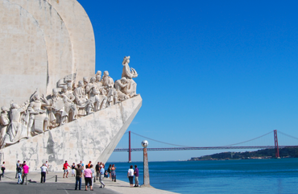

The Costal Capital City
From imposing São Jorge Castle, the view encompasses the old city’s pastel-colored buildings, Tagus Estuary and Ponte 25 de Abril suspension bridge. Nearby, the National Azulejo Museum displays 5 centuries of decorative ceramic tiles. Just outside Lisbon is a string of Atlantic beaches, from Cascais to Estoril.
Lisbon is Europe's second-oldest capital (after Athens), once home to the world's greatest explorers like Vasco da Gama, Magellan and Prince Henry the Navigator, becoming the first true world city, the capital of an empire spreading over all continents, from South America (Brazil) to Asia (Macao, China; Goa, India). The former launch pad for many of the world's greatest voyages is now where modern travelers discover..
It has a warm Mediterranean climate and sandy beaches, it's affordable and there are plenty of fiestas to be had. What's not to love about Lisbon, one of the hottest new destinations for 2016?
Work of Paul Truong Nguyen for CS545 Fall 2016. All images and text were taken from other websites as this was a class assignment, solely used for educational purposes only.